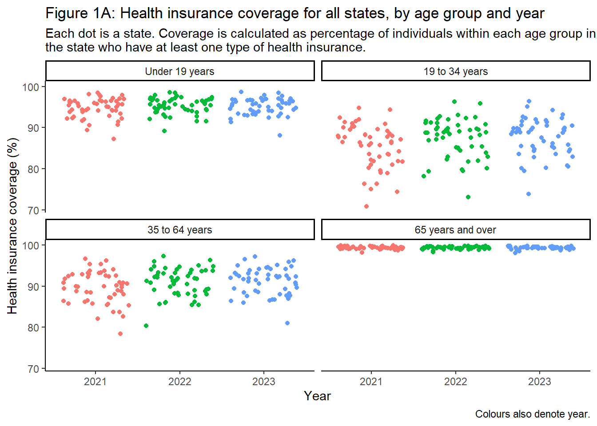
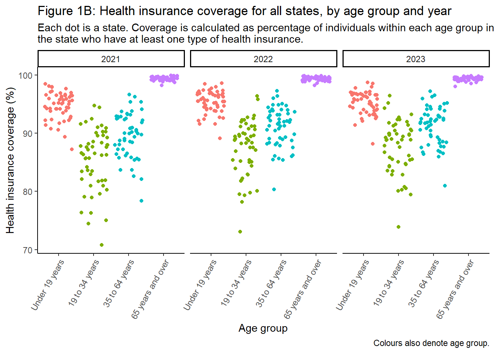
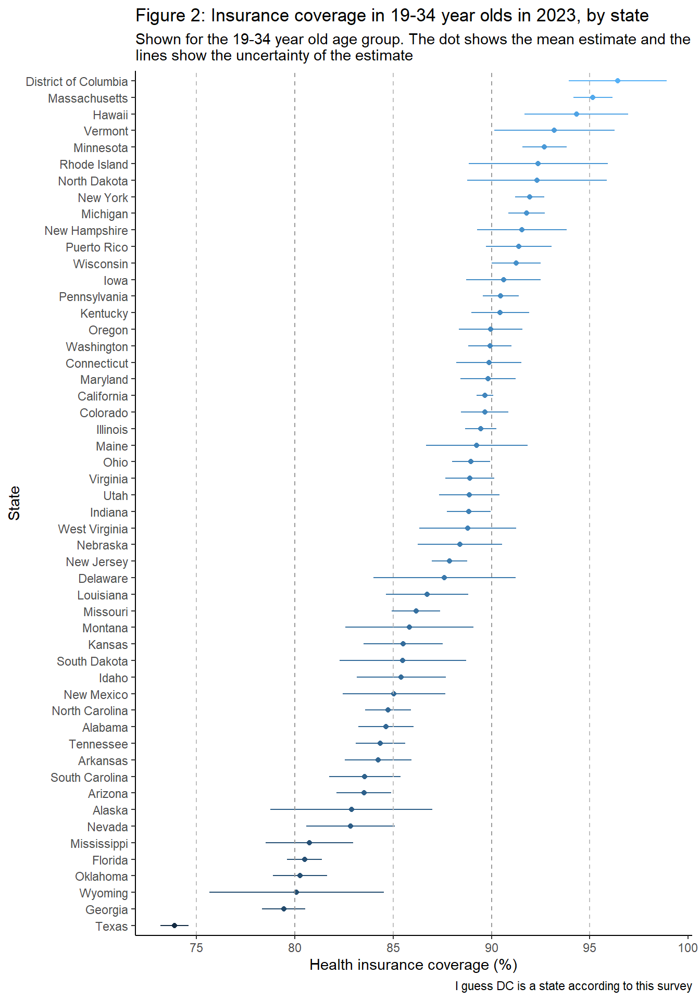
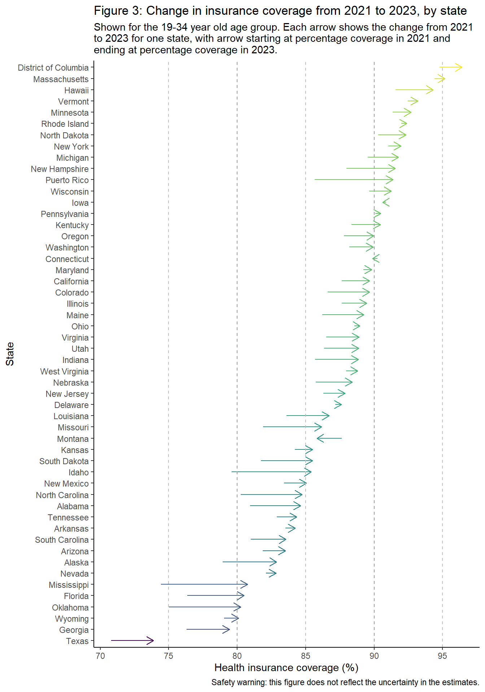

PH.140.777 Statistical Programming Paradigms and Workflow project 2
Nowell Phelps (email nphelps2@jh.edu; JHED ID nphelps2) and Asabere Asante (email aasaber2@jh.edu; JHED ID aasaber2)
Introduction
This is our submission for project two for the class PH.140.777 Statistical Programming Paradigms and Workflows. Nowell Phelps (email nphelps2@jh.edu; JHED ID nphelps2) and Asabere Asante (email aasaber2@jh.edu; JHED ID aasaber2) worked together on this project.
Part One
In this part we investigate health insurance coverage in the United States, how it varies across age groups and states, and how it has changed since the pandemic, in the years 2021 - 2023. Specific questions are: Do younger people have a lower prevalence of health insurance coverage than those who are older? Are there differences between coverage rates in different states? Is health insurance coverage increasing over time?
Loading and preprocessing data
In this section we used three different calls to the tidycensus API to extract variables on health insurance coverage by age group from the “ACS1” surveys from 2021, 2022 and 2020. We ran this code once to load the data, and then saved it locally, as recommended in the project brief, in order to avoid pulling the data from the API everytime we rendered the document. The data is saved locally in a /data folder, available on the github repository we used for this project: https://github.com/NowellPhelps/project2_stephanie. The code below is commented out, as it is not needed once the data is saved locally.
We wrangled the data extensively using functions from purr and stringr to extract age group and numbers of coverage types from the variable labels, functions from dplyr to rename columns, select variables, and reshape the dataframe, and to calculate prevalences from the raw numbers present in the dataset.
Open code
remove(list =ls())library(tidyverse)# LOAD DATA - running after accessing data via API, in commented code abovehealth_insurance_2021 <-read_csv("data/health_insurance_2021.csv")health_insurance_2022 <-read_csv("data/health_insurance_2022.csv")health_insurance_2023 <-read_csv("data/health_insurance_2023.csv")variables_df <-read_csv("data/data_dictionary.csv")# Merge and remove old datahealth_insurance <-rbind(health_insurance_2021 %>%mutate(year =2021), health_insurance_2022 %>%mutate(year =2022), health_insurance_2023 %>%mutate(year =2023))remove(health_insurance_2021, health_insurance_2022, health_insurance_2023)# Join by data dictionaryhealth_insurance <- health_insurance %>%left_join(., variables_df, by =join_by("variable"=="name")) %>% dplyr::rename(State = NAME)# Extract age group and insurance status from variable label in data dictionaryhealth_insurance$age_group <-map_chr(health_insurance$label, .f =function(X) str_replace(str_split(X, "!!")[[1]][3], ":", ""))health_insurance$insurance_status <-map(health_insurance$label, .f =function(X) str_replace(str_split(X, "!!")[[1]][4], ":", ""))health_insurance$insurance_status[which(is.na(health_insurance$insurance_status))] <-"total"# clean up datahealth_insurance <- health_insurance %>%select(-label, -concept)health_insurance <- health_insurance %>%select(-variable) # get min and max of uncertainty range by adding and subtracting marigin of errorhealth_insurance$min_estimate <-map2_dbl(health_insurance$estimate, health_insurance$moe, .f =function(x,y) x - y)health_insurance$max_estimate <-map2_dbl(health_insurance$estimate, health_insurance$moe, .f =function(x,y) x + y)# clean up furtherhealth_insurance <- health_insurance %>%select(-moe) %>% dplyr::rename(mean_estimate = estimate)health_insurance <- health_insurance %>%select(-GEOID)# just get totals, for later use calculating prevalencehealth_insurance_totals <- health_insurance %>%select(c("State","mean_estimate","year","age_group","insurance_status")) %>%filter(insurance_status =="total") %>%select(-insurance_status) %>%rename(total = mean_estimate)health_insurance <- health_insurance %>%filter(insurance_status !="total") # Merge different insurance categorisations togetherhealth_insurance$insurance_status <-lapply(health_insurance$insurance_status,FUN =function(X) ifelse(X =="No health insurance coverage", "uninsured", "insured")) # Group insurance categories together, merge with total dataframe and calculate percentageshealth_insurance <- health_insurance %>%group_by(State, year, age_group, insurance_status) %>%summarise(mean_estimate =sum(mean_estimate),min_estimate =sum(min_estimate),max_estimate =sum(max_estimate)) %>%left_join(health_insurance_totals) %>%mutate(percentage_mean = (mean_estimate/total)*100,percentage_l = min_estimate/total*100,percentage_u = max_estimate/total*100) %>%select(-c(mean_estimate, max_estimate, min_estimate, total))# Verify that totals sum to 100, as expectedtest <- health_insurance %>%select(State, year, age_group, insurance_status, percentage_mean) %>%pivot_wider(names_from = insurance_status, values_from = percentage_mean) %>%mutate(testsum = insured + uninsured)
Data visualisations
Open code
# Convert age group and year variables to factor for plottinghealth_insurance$age_group <-factor(health_insurance$age_group, levels =c("Under 19 years", "19 to 34 years", "35 to 64 years", "65 years and over"))health_insurance$year<-factor(health_insurance$year)# Plot Figure 1p1 <-ggplot(health_insurance %>%filter(insurance_status =="insured"), aes(x = year, group = year, colour = year, y = percentage_mean)) +facet_wrap(~age_group) +geom_jitter() +theme_classic() +xlab("Year") +ylab("Health insurance coverage (%)") +theme(legend.position ="none") +labs(title ="Figure 1A: Health insurance coverage for all states, by age group and year",subtitle ="Each dot is a state. Coverage is calculated as percentage of individuals within each age group in\nthe state who have at least one type of health insurance.",caption ="Colours also denote year.")plot(p1)

Open code
p2 <-ggplot(health_insurance %>%filter(insurance_status =="insured"), aes(x = age_group, group = age_group, colour = age_group, y = percentage_mean)) +facet_wrap(~year) +geom_jitter() +theme_classic() +xlab("Age group") +ylab("Health insurance coverage (%)") +theme(legend.position ="none",axis.text.x =element_text(angle =60, hjust =1))+labs(title ="Figure 1B: Health insurance coverage for all states, by age group and year",subtitle ="Each dot is a state. Coverage is calculated as percentage of individuals within each age group in\nthe state who have at least one type of health insurance.", caption ="Colours also denote age group.")plot(p2)

Open code
# Reformat data for plottingdata_plot <- health_insurance %>%filter(insurance_status =="insured") %>%filter(age_group =="19 to 34 years") %>%filter(year %in%c(2021,2023)) %>%pivot_wider(names_from = year, values_from =c(percentage_mean, percentage_l, percentage_u))# Order by increasing prevalence in 2023state_order <- data_plot[order(data_plot$percentage_mean_2023, decreasing = F), ]$Statedata_plot$State <-factor(data_plot$State, levels = state_order)# Plot Figure 2p3 <-ggplot(data_plot, aes(x = percentage_l_2023, xend = percentage_u_2023, y = State, yend = State, colour = percentage_mean_2023)) +geom_segment() +geom_point(inherit.aes = F, aes(x = percentage_mean_2023, y = State, colour = percentage_mean_2023))+theme_classic() +ylab("State") +xlab("Health insurance coverage (%)") +theme(legend.position ="none") +scale_x_continuous(breaks =c(70, 75, 80, 85, 90, 95, 100)) +geom_vline(xintercept =75, colour ="grey", linetype ="dashed") +geom_vline(xintercept =80, colour ="grey60", linetype ="dashed") +geom_vline(xintercept =85, colour ="grey", linetype ="dashed") +geom_vline(xintercept =90, colour ="grey60", linetype ="dashed") +geom_vline(xintercept =95, colour ="grey", linetype ="dashed") +labs(title ="Figure 2: Insurance coverage in 19-34 year olds in 2023, by state",subtitle ="Shown for the 19-34 year old age group. The dot shows the mean estimate and the\nlines show the uncertainty of the estimate", caption ="I guess DC is a state according to this survey")plot(p3)

Open code
# Plot Figure 3p4 <-ggplot(data_plot, aes(x = percentage_mean_2021, xend = percentage_mean_2023, y = State, yend = State, colour = percentage_mean_2023)) +geom_segment(arrow =arrow(length=unit(0.30,"cm"))) +theme_classic() +scale_colour_viridis_c() +ylab("State") +xlab("Health insurance coverage (%)") +theme(legend.position ="none") +scale_x_continuous(breaks =c(70, 75, 80, 85, 90, 95, 100)) +geom_vline(xintercept =75, colour ="grey", linetype ="dashed") +geom_vline(xintercept =80, colour ="grey60", linetype ="dashed") +geom_vline(xintercept =85, colour ="grey", linetype ="dashed") +geom_vline(xintercept =90, colour ="grey60", linetype ="dashed") +geom_vline(xintercept =95, colour ="grey", linetype ="dashed") +labs(title ="Figure 3: Change in insurance coverage from 2021 to 2023, by state",subtitle ="Shown for the 19-34 year old age group. Each arrow shows the change from 2021 \nto 2023 for one state, with arrow starting at percentage coverage in 2021 and\nending at percentage coverage in 2023.",caption ="Safety warning: this figure does not reflect the uncertainty in the estimates.")plot(p4)

Results and discussion
Figures 1A and 1B show that although health insurance coverage may be slightly increasing over time, especially in middle age groups (19 to 34 years and 35 to 64 years), the variation across time is much smaller than that across age group, which show a strong pattern across all of the years, and across states themselves. The difference in coverage between the 65+ age group (near-universal coverage in all states) and the others is stark, showcasing the efficacy of Medicare. In order to investigate differences across states, and across time, we decided to focus our attention on the 19-34 age group which exhibits the most variation across states.
As shown in Figure 2 there are significant differences across states, even when we consider the sampling uncertainty. Insurance coverage ranges from more than 95%, in The District of Columbia, to less than 75% in Texas. However, Figure 3 shows good news: coverage has increased almost everywhere from 2021 to 2023, with only two states exhibiting a decrease. We have answered all of the questions we posed, although we could extend this work by considering different age groups, or by looking at the breakdown into different types of insurance.
Other potential bias is that the data used here comes from the ACS1 surveys, via the tidycensus API. This survey may underestimate true insurance coverage, as although it samples people in homeless shelters, it does not sample unhoused people who are not in homeless shelters and who are likely without insurance at higher rates than the general population. A limitation of using the API is it may hinder reproducibility, as the data providers may change or remove the accessed dataset down the line, and also as it may be unclear to a layperson what the API is doing.
Another limitation of our work here is that we took a fairly simple approach to uncertainty, by adding the margin of errors for the variables coding two or more types of health insurance and one type of health insurance in order to obtain estimates of their uncertainty. We also only used the central estimate for the total number of individuals, ignoring uncertainty. A more nuanced look at the survey design and documentation could improve this, although we would expect the qualitative message to remain very similar.